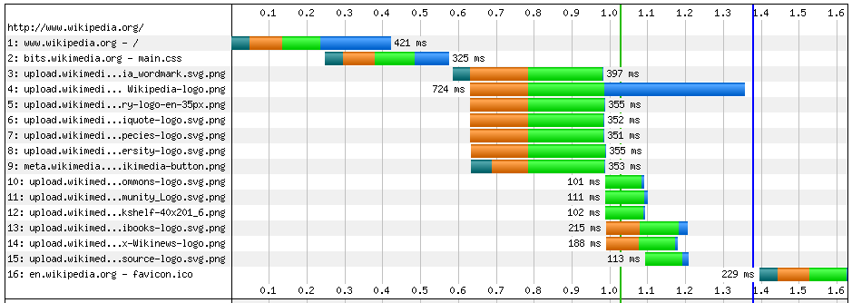
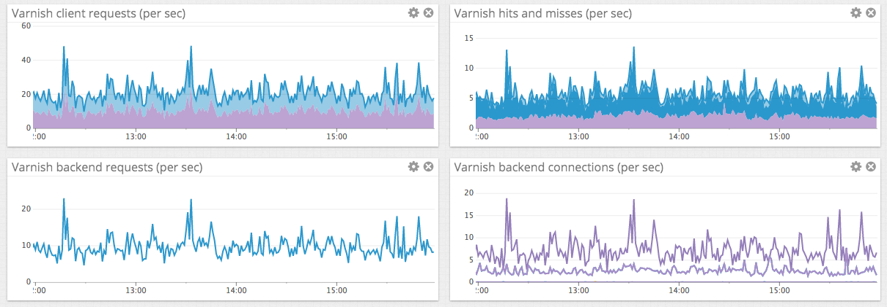
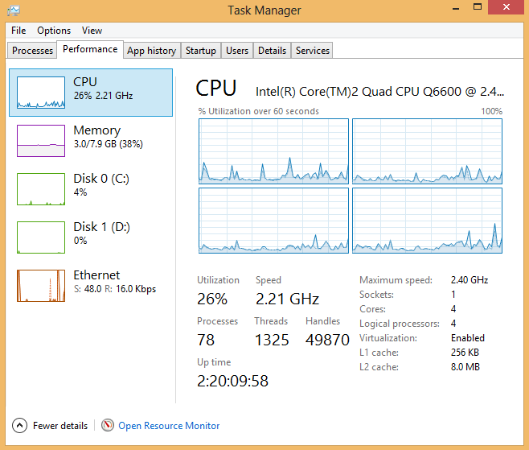
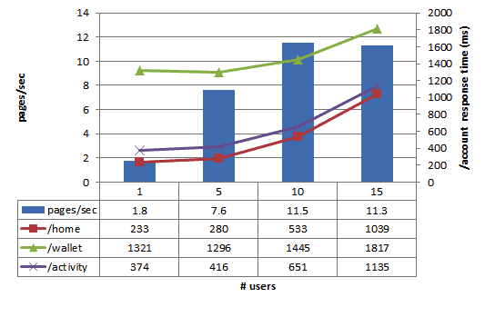
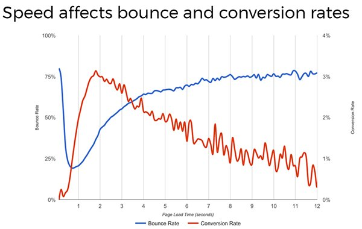
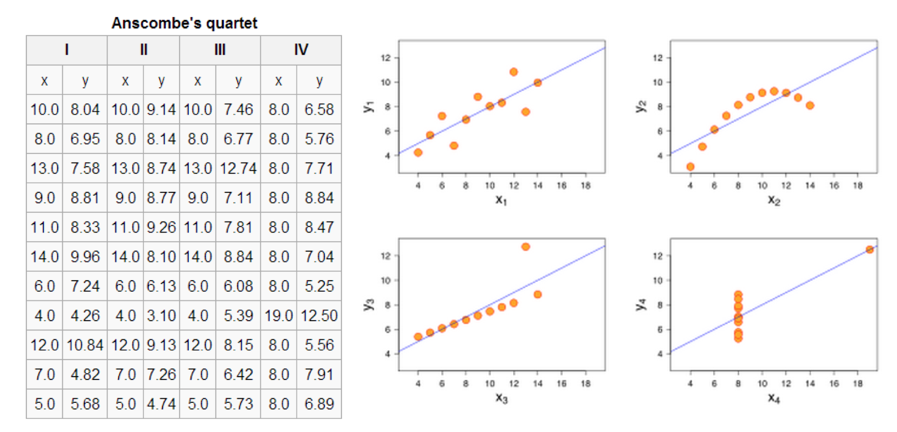
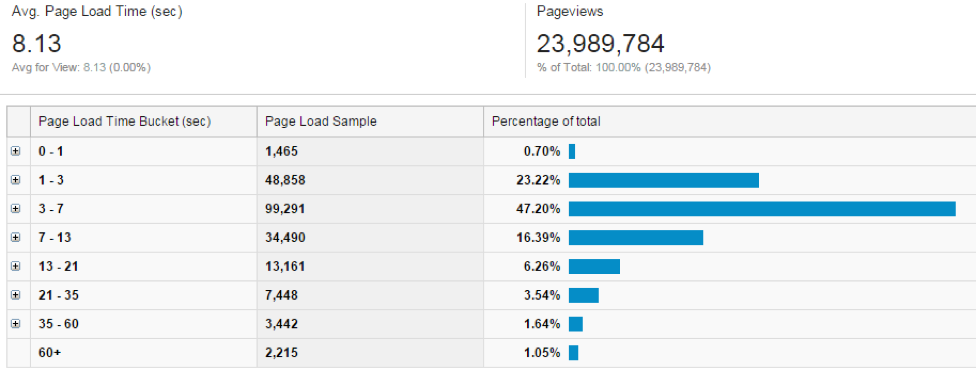
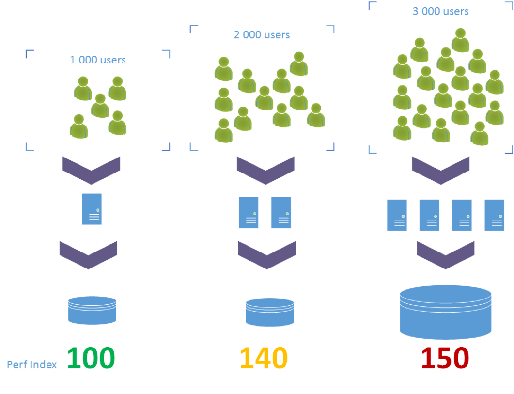
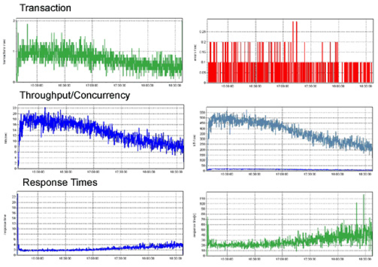

What is Performance ???
Maxime Lemaitre - @__Cybermaxs__Do we all have the same vision of Performance ?
End user
...the time to open your application or to visualize your website...

Web Developper
...the number of requests, the bundle size, the page load, ... aka Web Performance Optimization (WPO)...
Back-end Developper
...the time to process requests, the number of requests/sec, scalability, ...
Sysadmins, Ops
...hardware resources (CPU, Memory, IOs) ...
Marketing Guy
...the time of business transaction, the number of business transactions aka Througput...
Manager(s)
... cloud costs, uptime, competitors...
- Who is right ?
- Do we have a problem ?
- Does performance matter ?
- What is performance ?
a common definition
The word performance in computer performance means the same thing that performance means in other contexts, that is, it means ...
How well is the software doing the work it is supposed to do?
How well a software is supposed to work ?
- Short response time for a given action
- High throughput (rate of processing business transaction)
- Low utilization of computing resources(CPU, Memory, IO, ...)
- High availability of the application
- Fast (or highly compact) data compression and decompression
- Low latency
- Low Environmental impact
(... in all situations ...)
Does performance matters ?
What happens if the software is not working well...When your website or application is broken, nobody will use it ;)
The slower your website or application loads and displays, the less people will use it
Expiremental results
Some quantitatives results from the industry
- Google – A 500 millisecond delay caused a 20% drop in traffic
- Amazon - Every 100ms of latency cost them 1% in sales.
- Shopzilla – Speeding up their site by 5 seconds increased the conversion rate 7-12%
- Mozilla – Shaving 2.2 seconds off their landing pages increased download conversions by 15.4%
- Netflix – Adopting gzip compression, resulted in a 13-25% speedup and cut their outbound network traffic by 50%.
Is it only for the end-user ?
Do we have a performance issue ?
Most of the time, performance issues are not visible...
- Website/App is up
- No errors
- No alerts
- No remarks from your manager(s)
- No complaints from users
We can suppose the system is working well :(
...But in fact we just don't know
Working on performance
=
Showing what's not visible
How many 3's ?'
Anscombe's quartet
four datasets that have nearly identical simple statistical properties but very different when graphed
Averages are bad !!!
We don't want something to be fast on average, we want it to be fast for most of the users
Most people have more than the average number of legs - Hans Rosling
Use Percentiles !
Why ?
Page loads in more than the average for 30% of the users, even more than 21 secs for 5%
Working on performance
Where ?
You won't see ANY performance issues during unit tests
You won't see ALL performance issues in Development
You can’t optimize everything, you will never have the time to work only on performance
Measure !
Measure !
Measure !
Don't try to guess, never automatically apply tips, best practices... optimizing performance is meaningless if you do not have effective tools for measuring it.
Is this performance issue a real problem for you ?
The art of Micro-benchmarking
Benchmarking is hard, it’s very easy to end up not measuring, what you think you are measuring
common pitfalls : Cold-start, Dynamic selection of benchmarks, Loop optimizations, Dead-code elimination, Constant foldings, Non-throughput measures, Synchronize iterations, Multi-threaded sharing, Multi-threaded setup/teardown, False-sharing, Asymmetric benchmarks, Inlining
Do not implement your own test rig
Load testing
It's great if your site performs well for a single user..
But how will it do when a storm of users hits?
Every software has characteristics
The throughput is not linear : it depends on the load.
The response time increases proportionally to the user load.
Use the right tools with the appropriate methodoly
In 2017, Why do we still have performance troubles ?
Lack of -production- monitoring
Misunderstood quote
We should forget about small efficiencies, say about 97% of the time: premature optimization is the root of all evil. Yet we should not pass up our opportunities in that critical 3%
Donald Knuth
dependencies
- Third-Parties
- External librairies
Non-scalable design
Not mastering the platform/tools
Lack of ownership
(Unexpected) Big Data
(Unexpected) success
No performance tests
No goals, No objectives, No SLA
Tip : use averges percentiles
No exploration
A Natural evolution of a system
As the software evolves, Performance regression is
expected
over timeJust gave up
Never give up your performance accidentally
Rico Mariani
Building a performance-minded team
- Understand your critical path
- Understand your prod activity & usage
- Do effective testing
- Setup Perf Infrastructure & Automation
- Become metrics-oriented
- Define SLA on what matters for you
- Do regular code reviews
- Educate your team, company
- Celebrate your success !
Your homework
- Can you give me the main bottleneck of your system ?
- Do you have performance/load tests ?
- Can you show me your performance dashboards ?